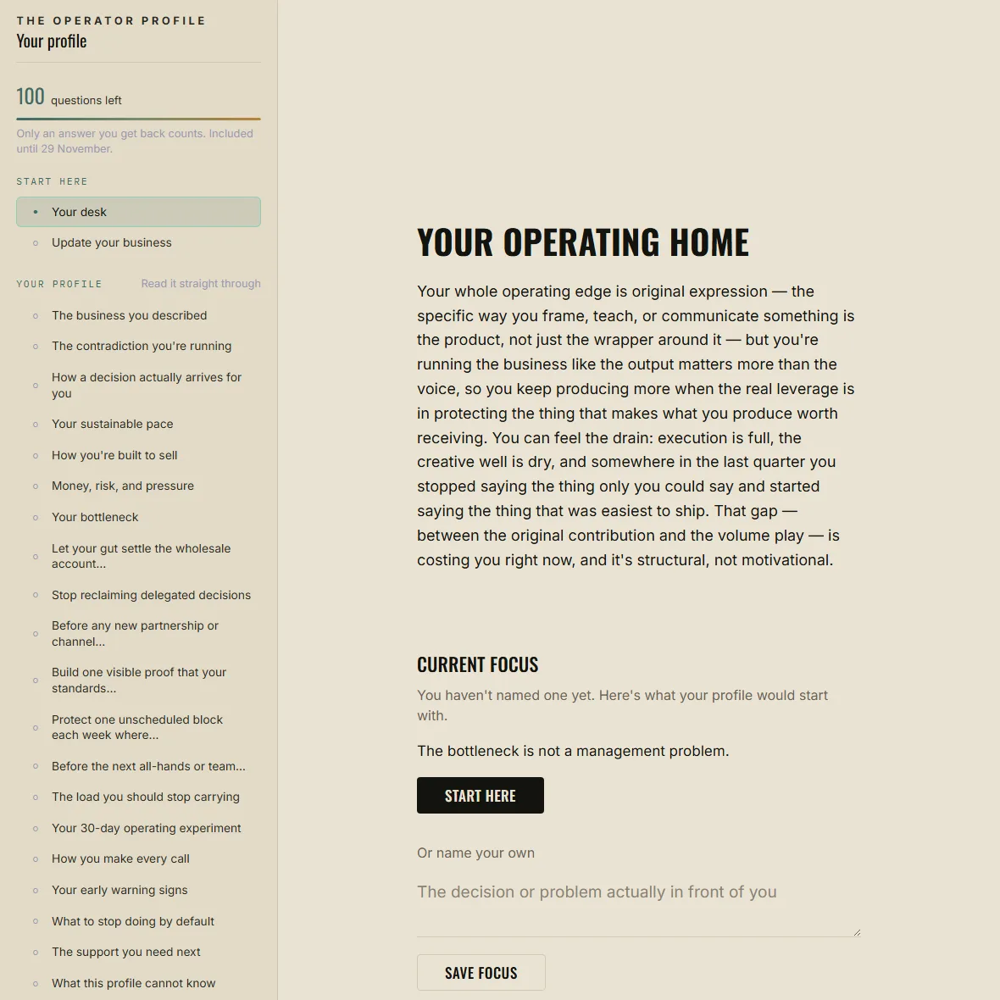
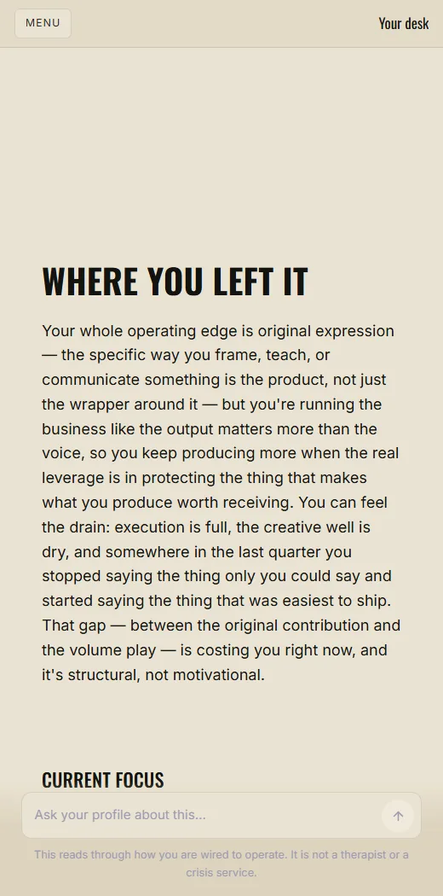
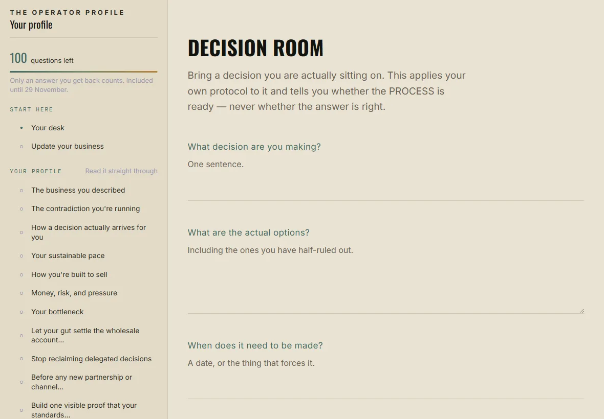
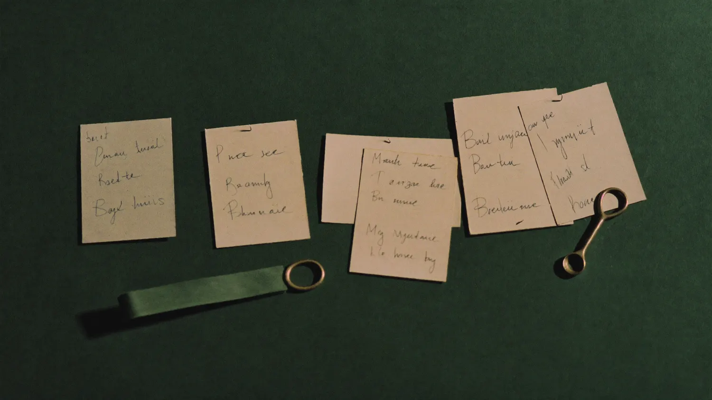

A founder operating manual written for one person, from your birth data and six questions about the company.
You are working hard and the business is fighting you anyway.
The pace it demands is not the pace you can actually hold. The decision you have been sitting on still will not close. The advice that works for every other founder keeps sliding off you. That collision, between how you are built to operate and how you are currently running the company, is what this is about.
A number, a letter, a four-word type. It described you well enough that you read it twice and sent a screenshot to someone. Then Monday came, and the week ran exactly the way it ran the week before. Nothing in the description told you what to do at nine in the morning with a full inbox and a decision you'd already been sitting on for a month.
That's the harmless half of the problem. Here's the expensive half.
Have you built the time-blocked schedule three or four times and quietly stopped setting the alarm by day four?
Tried the morning routine that changes everything and found that it changed nothing?
Run the follow-up cadence, the daily posting, the delegation system, with a tracker and a week of genuine effort behind it?
And watched it fall over anyway, while the person who recommended it is still doing it and still fine?
When that happens enough times, most people land on the same conclusion. It works for everybody else, so I must be the one who's broken. Not disciplined enough. Not consistent enough. Missing something other founders clearly have. So you go looking for a better system, and the better system fails in the same place, and the conclusion gets a little more certain every time.
The correction isn't that you're secretly exceptional. It's more boring than that, and more fixable.
Generic advice is written for a generic operator. Whoever wrote it built it on their own wiring, and then removed the part where that mattered. It assumes decisions get made by weighing options over several days. It assumes your energy is a flat, renewable resource you can schedule against. It assumes you sell by initiating, that Tuesday at 2pm will produce the same quality of attention as any other hour on the calendar, and that the fix for a dropped habit is more willpower.
Every one of those is true for somebody. Some of them may not be true for you. The advice never says which, because the person who wrote it never had to notice.
A document of more than 5,000 words, written for one person, in thirteen sections. The sample we generated from a real chart came to 7,627.
It is built in two halves, and the split is deliberate.
Six long sections, roughly 650 words each, that describe how you operate. They are written from your birth data alone, not from anything you typed, and that is the whole point of them. If they land, they landed on evidence you did not hand over.
The exact place where how you are built and how you are currently running the company are fighting each other. Where it shows up in an ordinary week, what it costs you now, and why it has survived this long — which is almost always because one half of it is a genuine strength that has paid off before.
On what timescale a real yes forms. What a true signal feels like from the inside, and what the convincing impostor feels like. Which decisions you are reliably good at, and which you should never make alone or on the spot.
The conditions that produce your best work, what drains you fastest, and the difference between your capacity and your adrenaline — including the tell that you have crossed from one into the other. It also names the piece of popular productivity advice most likely to fail someone built like you, and why.
Where your actual persuasive force comes from, which is rarely the thing you think you are supposed to be doing. What kind of selling costs you almost nothing, and what kind drains you out of proportion to what it returns.
How you behave when money is tight and when it is suddenly plentiful — both distort, usually in different directions. Your real risk posture, which is often not the one you claim. And your stress signature: which of your judgements to distrust in a hard week.
The one section that reads what you typed. It takes the thing you said feels heavy and diagnoses the operating pattern underneath it, and answers the question you cannot answer yourself: is this your wiring serving you, or the same wiring running you?
Short, specific, and pointed at your week. Five to seven operating instructions, each with six parts. A 30-day operating experiment that sequences three of those instructions across four weeks — a behaviour-change loop, not a business roadmap. Then four cards short enough to pin above a desk: how you make every call, your early warning signs, what to stop doing by default, and the support you need next.
And a closing section on what the profile cannot know. That one is in here because a document that never names its own edges is asking you to trust it further than it has earned.
You read it on screen the moment it is written, about forty seconds. Then it stays, in a portal you keep.
$29, one time. Pay, answer the questions, and watch it build on the page.
Your birth date, your exact birth time and your birthplace go into four separate readings, each calculated and interpreted on its own terms, without being shown what the others said.
It would be tidy to tell you that four systems agree. That sentence is not available here, and it is worth knowing why. Human Design and the I Ching are two readings of the same computed wheel of 64 gates. Human Design reads that wheel mechanically, as type, authority and centers. The I Ching reads the same wheel developmentally. Same arithmetic, read twice.
So when the engine counts how many independent sources landed on a theme, it counts three: the gate wheel, the Western chart, and the Vedic chart. Three is the number it reports internally, and three is the number we will say to you.
Nothing here is scored. No instrument is calibrated against a population. Three lenses landing in the same place is a reason to look harder at something, not proof that it is true about you.
That is why every operating instruction in the profile is written as a seven-day experiment with an observable signal to watch, and why the last section of the profile is a plain list of what it cannot know.
You should not have to take our word for how this reads. What follows is the opening of an Operator Profile that was actually generated: one real birth chart, one real set of six business answers, more than 7,600 words of output. It is copied out of the file exactly as it was produced. Nothing has been smoothed over for this page.
The contradiction they are running, stated in the opening sentence. No greeting, no summary of their strengths.
Opening lines, sample profile
The sharpest thing you produce — the insight that lands whole, that reorders how someone sees their own situation — arrives before you can explain it, and you've built a business that keeps demanding you explain it anyway. So you're either holding back the knowing because the room hasn't asked the right way yet, or you're pushing it out too early and watching it land as noise, and either way the revenue moment passes. The contradiction isn't between your confidence and your delivery — it's that your most valuable output is unrepeatable, untimely, and almost impossible to package, and you're trying to run a scalable operation on top of it.
That founder sells strategic advisory retainers to founders of small agencies. When the intake asked what feels heaviest, they said the pipeline gets rebuilt from scratch every month. The profile went straight at that.
Further in, a section called How a decision actually arrives for you spends close to seven hundred words on one question: how does this person know when a call is right? It separates the fast body-level read from the case the mind assembles afterwards, and then it drops the difference into an ordinary week.
From the decision section
It's Thursday afternoon, someone is in your inbox with an opportunity — a partnership, a deal, a hire. Your gut landed in the first ten seconds of reading it. But the terms are interesting. The numbers work on paper. So you stay with it, run it forward in your mind, start building the case. Two hours later you've written a mental deck justifying a yes that your body flagged as a no before you'd finished the second sentence. That mental deck is not your decision. It's noise that arrived after your actual decision was already made.
Then the profile stops describing and starts instructing, and the six business answers show up by name. One of this founder's instructions reads:
Stop treating every referral conversation like a cold pitch. Tell them explicitly what you're solving for and let them bring the qualified name to you.
Under it sits the seven-day version. In the next conversation where someone praises your work, say one sentence out loud: I'm specifically looking for founders running small agencies who feel like their pipeline resets every month. If anyone comes to mind, I'd love an introduction. Do it once, deliberately, before Friday. Then watch whether they pause and name someone specific, or say they will think about it. That is their own market, in their own words, handed back as something to say on a Tuesday.
Your birth data says how you are wired. It cannot say what that wiring is being applied to.
Without these answers, an operating instruction is just a description of you with a verb attached to it. With them, the instructions point at your pipeline, your buyers, and the decision you are currently sitting on.
What does the business look like today: just you, a small team, or a growing team?
TapWhat do you sell, and who buys it?
One or two linesHow do customers usually find you now?
TapWhat feels broken, heavy, or harder than it should right now?
Your own wordsWhat decision have you been sitting on longer than it deserves?
Your own wordsWhat business advice or system have you tried that never seems to stick?
TapOne question per screen. It takes about three minutes, and you are never asked for your revenue.
Then you watch those answers do work. In the sample profile, the open decision was whether to raise a retainer rate or bring on a second contractor. One of that person's operating instructions is titled “When the rate-or-contractor decision comes back around this week, don't research it further — notice what your body already settled on and test that reading against one real constraint.” That instruction exists because of one line typed at intake.
The profile opens by reading your own answers back to you, plainly, with nothing added and nothing dressed up as insight. Then it draws the line out loud.
That boundary holds for the rest of the document. What you told us stays what you told us. It is never handed back to you as something the chart supposedly revealed. When a section says your pipeline gets rebuilt every month and never compounds, that is your sentence. When a section says how clarity actually arrives for you, or where your pace breaks, that came from the birth data.
This matters most in the passages that land hardest. Plenty of tools get their power by repeating your own words at you in a lower voice. You should be able to check, sentence by sentence, whether you are recognising something you had not put into words yet or reading back what you typed three minutes ago. In this profile you can.
The line, in the document's own words
Everything from this point forward is a read of how you are built to operate — how you decide, sell, structure your time, and where your own wiring is working against you. The business above is what it gets applied to.
Halfway through, the profile stops describing you and starts handing you things to do.
Each instruction is a single direct sentence, and then five more fields, because a sentence on its own is just advice. Here is one in full, from a real profile. It was written for a solo advisor who told the intake that time blocking never sticks: he'd tried it four times and quit inside a week, every time.
Replace time blocking with a single daily constraint: one non-negotiable output before any inbox or async response.
Time blocking fails you because it treats the structure as the thing to protect, and the structure is what you keep renegotiating when the day moves. You're built to work in concentrated bursts, not in pre-scheduled categories. The one-thing-first rule is harder to renegotiate than a calendar block because it's binary. It's done or it isn't.
This is what's underneath the four failed time-blocking attempts. The system collapses because it requires you to defend multiple containers. One constraint is a decision made once; a timetable is a decision remade every hour.
Without the constraint, reactive work — messages, client questions, inbox — fills the available space, and the one thing that would have compounded (content, product, the rate conversation) keeps landing at the bottom of the day when you're depleted.
Tomorrow morning, before you open email or any messaging, produce one thing: a paragraph, a decision made and written down, a piece of content drafted. It can be short. Do this for five consecutive days and track only whether you did it, not what it produced.
Whether the protected output is still happening by Friday, and how the rest of the day feels differently organized when the first thing is already done before you've fielded a single request.
It doesn't tell him to try harder, and it doesn't hand him a system that worked for somebody else. It takes the habit he already told us he abandons, explains why that particular structure fights the way he works, swaps in one that asks less of him, and then tells him what to look at on Friday to find out if it held.
Those last two fields are the reason this works. An instruction here is a testable operating hypothesis, not a command. You're allowed to read one and think it's wrong for you. Run the seven-day version anyway, watch the signal it names, and the verdict comes from your own week instead of from us.
A report names what you are and leaves Monday to you. These instructions already know what you sell, how customers find you, what feels heavy, and which decision you've been sitting on, because you answered six questions about the business before anything was written.
So they can point at the real conversation, the real decision, the real habit. The other instructions in that same profile covered his referral conversations, the rate-or-contractor decision he'd been circling, two windows a week with no deliverable attached, the pull to re-edit content instead of publishing, and one question to ask a retainer client.
Most things like this arrive as a file. You read it once, feel seen for an afternoon, and never open it again, which is the same failure as the personality test, arriving a bit later.
This one opens as a portal. Every section of your profile is in the rail on the left, so you can go straight to the one that matters this week instead of scrolling for it. Beside them sit six practices, and each one takes something live in your business and runs your own profile against it.

Your operating home. Every section in the rail, the practices under it, and the ask bar pinned to the bottom of every screen.

And on a phone, where most people actually read it.
Bring a decision you are actually sitting on. It applies your own decision protocol to that specific call and gives you a brief: the process to use, the self-sabotage pattern to watch for, the business facts it cannot see, and a readiness call about the process, never about which option is right. Afterwards you record what happened, and that becomes part of what it knows about how you really decide.
Something is stuck. This separates the visible problem from the operating pattern underneath it and leaves you with one experiment worth seven days: the pattern, the early tell, the smallest change worth testing, what to measure, and when to come back.
Ten minutes on the week that just happened. Which decision took too long, what you kept doing that someone else could have owned, where the week felt clean, where you overrode your own protocol. No streaks, nothing to keep up, no penalty for skipping it for a month.
List what you are carrying. It sorts the work into keep, hand off, systemise first, automate carefully, and stop, then builds the actual handoff for the one you pick, including the way you are most likely to take it back.
You give it the hours you actually have, not the hours a productivity book assumes. It returns a week shaped like the way you work: two or three focus blocks placed where they belong for you, decision time matched to your own protocol, recovery where your judgement needs it, one block nothing is allowed into, and a Friday review. It writes a plan you copy. It does not touch your calendar.
Someone told you to run your business a particular way. This works out which parts fit how you are built, which parts fight you, which parts need business evidence it does not have, and what to modify rather than abandon.
An ask bar sits at the bottom of every surface, and it already knows which page you are standing on, so you never have to re-explain your context. Ask what a section means for a specific call this week, or why a particular instruction is aimed at you and not at someone else. It answers in the same operating terms as the document, not as a chat assistant that happens to have read it.
If the business changes, you change the six answers. The profile is being applied to whatever you say it is, and you are not asked those questions from scratch ever again.

The Decision Room, mid-practice.

The end of the document collapses into things you can read in ten seconds on a bad morning, without rereading the section they came from.
Here is the edge of what your birth data and six business questions can see. Knowing where that edge sits is the only reason to trust what's inside it.
Those are settled by evidence: your numbers, your customers, and the people actually in the room with you. Where a question needs business data the profile doesn't have, it says so and names the data you'd need, rather than dressing a guess up as an answer.
That's a narrow lane, and it's narrow on purpose. Inside it the profile gets specific, because it's applied to what you sell, how customers find you, what feels heaviest right now, and the decision you named.
You don't have to take that boundary on faith from a sales page. The profile draws it itself, in its own final section. From the real sample:
What you just read knows how you're wired to operate. It does not know whether a market wants what you're selling. That is a question your numbers answer, not your birth data. […] Every one of those things is settled by evidence: your market, your numbers, the people actually in the room with you.
The company is yours. The call is yours. Nothing written here outranks your own judgement about your own business.
That's the arrangement. You get better information about the operator; you stay the one who decides what the business does with it. If a line in there doesn't match what you see in your own week, throw it out. The profile hands you its instructions as experiments for exactly that reason, and tells you what to watch so you can settle it yourself.
You are already running something. There is revenue, there are customers, and a week that fills itself.
That is the starting condition: the profile applies how you are built to a business that already exists, so there has to be one. Past that, it is written for you if any of this is true.
The profile reads your six answers straight back to you before it applies anything. Here is that moment from a real generated profile:
Strategic advisory retainers sold to founders of small agencies, plus a self-serve digital product. Right now the business is you alone. Clients find you through referrals and through content you put out.
If you do not have answers to those questions yet, there is nothing for the profile to be applied to.
Here is what it will not do. Better you find that out now than after you pay.
It will not write your business plan, and it will not build your marketing strategy. It will not pick a niche or rank your options by which one pays best. It will not name a dream client. It will not tell you whether your price is right, whether your unit economics work, or whether the market wants what you sell, because those are settled by your numbers and not by your birth data.
It will not forecast. Nothing in it predicts revenue, growth, or how a decision turns out. The profile says so itself, in its own closing section: it does not know whether a particular decision you are weighing will succeed or fail, and it does not tell you what to do.
And it is not a horoscope. No month ahead, no good days and bad days, no daily guidance. Your birth data is read once, for how you are built to operate, and everything after that is about how your week actually goes.
If you wanted one of those, this is not it, and I would rather you kept your $29. If you wanted a straight read on why the way you run the business keeps fighting the person running it, that is the whole document.
Astrology is two of the four things it reads: the Western chart and the Vedic chart. The others are Human Design and the I Ching. But nothing in the document names any of them, and it is not written in that register. It is written as an operating manual. If a section only worked because you believed in the source, it would not be worth $29. Read it and see whether it describes how you actually work.
Then it will not guess one. A birth time changes the read substantially, so instead of inventing a plausible time, the system calculates your chart across the window you give it and keeps only what stays the same throughout. The time-sensitive parts are left out and said to be left out. A smaller true profile beats a complete invented one.
No. The profile still generates. But the instructions get noticeably less specific, because there is nothing to aim them at, and the section that reflects your business back is simply omitted rather than filled in with a guess. Three minutes is a good trade.
More than 5,000 words; the sample ran 7,627. It appears on screen while it is being written, about forty seconds. Keep the link it gives you. That link is how you get back in.
No. $29, once. The profile is yours to keep and does not expire.
Yes, any time, from inside the portal. Businesses change in month three. You should not have to buy a second profile to say so.
Then say so. It is a read of tendencies, not a measurement, and it can be wrong about a person. The practices are built to notice that. The Weekly Review is explicitly allowed to conclude that a hypothesis in your profile did not hold. A tool that can never be wrong is not telling you anything.
No, and it says so in its own last section. It cannot know whether a market wants your offer, whether your price is right, whether the unit economics work, which niche is most profitable, whether to hire or fire someone, or whether a decision will succeed. Those need business evidence it does not have. What it can do is show you how you are built to operate and where that is costing you.
A coach asks questions until they understand how you work. This starts from a read of how you work and applies it, for $29 rather than a monthly retainer. It is not a replacement for someone who knows your business. It is the thing you would otherwise spend three sessions establishing.
A strategist that has read your document and answers in its terms. It sits at the bottom of every page in the portal and knows which page you are on. It is not a therapist and not a crisis service, and it will say so if you take it somewhere it should not go.
Your birth data and your answers are used to write your profile and nothing else. You can export everything held about you, and you can delete it. Both are buttons in the portal, not an email you have to send.
No. The document never asks you to. It describes how you operate and hands you instructions you can test inside seven days, and every instruction comes with what to watch, so you can find out whether it was right rather than deciding whether to trust it.
It gave you a type, a number, a letter. It held your attention for a day. Then Monday came and nothing about how you run the business changed, because nobody told you what to do with it.
That is the whole difference here. The Operator Profile spends its first half on recognition: the contradiction you are running, how a decision actually arrives for you, the pace you can hold, how you are built to sell, what money and pressure do to your judgement, and where you have become the bottleneck. Then it turns and spends the second half on what to do about it, inside the business you described, starting this week.
Enter your birth date, exact birth time, and place. Answer the six questions about the business. Then read the first section and hold it against a real Thursday in your actual week. If it is not true of you, stop there. If it is, the rest of the document was written for that person.
$29, once. Nothing else is required to use it.